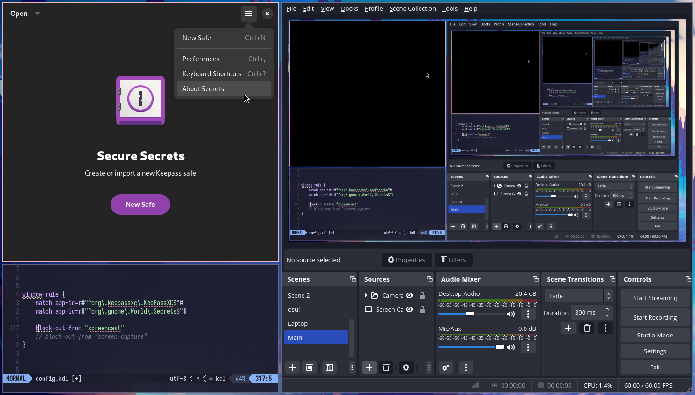
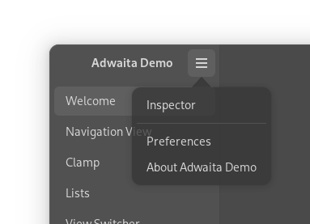
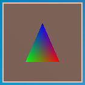
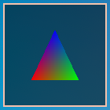
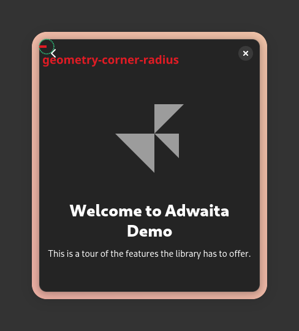
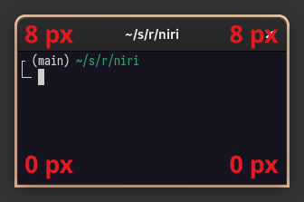
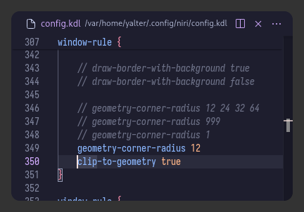

Window Rules
Overview#
Window rules let you adjust behavior for individual windows.
They have match and exclude directives that control which windows the rule should apply to, and a number of properties that you can set.
Window rules are processed in order of appearance in the config file. This means that you can put more generic rules first, then override them for specific windows later. For example:
// Set open-maximized to true for all windows.
window-rule {
open-maximized true
}
// Then, for Alacritty, set open-maximized back to false.
window-rule {
match app-id="Alacritty"
open-maximized false
}
Tip
In general, you cannot "unset" a property in a later rule, only set it to a different value.
Use the exclude directives to avoid applying a rule for specific windows.
Here are all matchers and properties that a window rule could have:
window-rule {
match title="Firefox"
match app-id="Alacritty"
match is-active=true
match is-focused=false
match is-active-in-column=true
match is-floating=true
match is-window-cast-target=true
match is-urgent=true
match at-startup=true
// Properties that apply once upon window opening.
default-column-width { proportion 0.75; }
default-window-height { fixed 500; }
open-on-output "Some Company CoolMonitor 1234"
open-on-workspace "chat"
open-maximized true
open-maximized-to-edges true
open-fullscreen true
open-floating true
open-focused false
// Properties that apply continuously.
draw-border-with-background false
opacity 0.5
block-out-from "screencast"
// block-out-from "screen-capture"
variable-refresh-rate true
default-column-display "tabbed"
default-floating-position x=100 y=200 relative-to="bottom-left"
scroll-factor 0.75
focus-ring {
// off
on
width 4
active-color "#7fc8ff"
inactive-color "#505050"
urgent-color "#9b0000"
// active-gradient from="#80c8ff" to="#bbddff" angle=45
// inactive-gradient from="#505050" to="#808080" angle=45 relative-to="workspace-view"
// urgent-gradient from="#800" to="#a33" angle=45
}
border {
// Same as focus-ring.
}
shadow {
// on
off
softness 40
spread 5
offset x=0 y=5
draw-behind-window true
color "#00000064"
// inactive-color "#00000064"
}
tab-indicator {
active-color "red"
inactive-color "gray"
urgent-color "blue"
// active-gradient from="#80c8ff" to="#bbddff" angle=45
// inactive-gradient from="#505050" to="#808080" angle=45 relative-to="workspace-view"
// urgent-gradient from="#800" to="#a33" angle=45
}
geometry-corner-radius 12
clip-to-geometry true
tiled-state true
baba-is-float true
min-width 100
max-width 200
min-height 300
max-height 300
}
Window Matching#
Each window rule can have several match and exclude directives.
In order for the rule to apply, a window needs to match any of the match directives, and none of the exclude directives.
window-rule {
// Match all Telegram windows...
match app-id=r#"^org\.telegram\.desktop$"#
// ...except the media viewer window.
exclude title="^Media viewer$"
// Properties to apply.
open-on-output "HDMI-A-1"
}
Match and exclude directives have the same syntax. There can be multiple matchers in one directive, then the window should match all of them for the directive to apply.
window-rule {
// Match Firefox windows with Gmail in title.
match app-id="firefox" title="Gmail"
}
window-rule {
// Match Firefox, but only when it is active...
match app-id="firefox" is-active=true
// ...or match Telegram...
match app-id=r#"^org\.telegram\.desktop$"#
// ...but don't match the Telegram media viewer.
// If you open a tab in Firefox titled "Media viewer",
// it will not be excluded because it doesn't match the app-id
// of this exclude directive.
exclude app-id=r#"^org\.telegram\.desktop$"# title="Media viewer"
}
Let's look at the matchers in more detail.
title and app-id#
These are regular expressions that should match anywhere in the window title and app ID respectively. You can read about the supported regular expression syntax here.
// Match windows with title containing "Mozilla Firefox",
// or windows with app ID containing "Alacritty".
window-rule {
match title="Mozilla Firefox"
match app-id="Alacritty"
}
Raw KDL strings can be helpful for writing out regular expressions:
You can find the title and the app ID of a window by running niri msg pick-window and clicking on the window in question.
Tip
Another way to find the window title and app ID is to configure the wlr/taskbar module in Waybar to include them in the tooltip:
is-active#
Can be true or false.
Matches active windows (same windows that have the active border / focus ring color).
Every workspace on the focused monitor will have one active window. This means that you will usually have multiple active windows (one per workspace), and when you switch between workspaces, you can see two active windows at once.
is-focused#
Can be true or false.
Matches the window that has the keyboard focus.
Contrary to is-active, there can only be a single focused window.
Also, when opening a layer-shell application launcher or pop-up menu, the keyboard focus goes to layer-shell.
While layer-shell has the keyboard focus, windows will not match this rule.
is-active-in-column#
Can be true or false.
Matches the window that is the "active" window in its column.
Contrary to is-active, there is always one is-active-in-column window in each column.
It is the window that was last focused in the column, i.e. the one that will gain focus if this column is focused.
Since: 25.01 This rule will match true during the initial window opening.
is-floating#
Can be true or false.
Matches floating windows.
Note
This matcher will apply only after the window is already open.
This means that you cannot use it to change the window opening properties like default-window-height or open-on-workspace.
is-window-cast-target#
Can be true or false.
Matches true for windows that are target of an ongoing window screencast.
Note
This only matches individual-window screencasts. It will not match windows that happen to be visible in a monitor screencast, for example.
// Indicate screencasted windows with red colors.
window-rule {
match is-window-cast-target=true
focus-ring {
active-color "#f38ba8"
inactive-color "#7d0d2d"
}
border {
inactive-color "#7d0d2d"
}
shadow {
color "#7d0d2d70"
}
tab-indicator {
active-color "#f38ba8"
inactive-color "#7d0d2d"
}
}
Example:
is-urgent#
Can be true or false.
Matches windows that request the user's attention.
at-startup#
Can be true or false.
Matches during the first 60 seconds after starting niri.
This is useful for properties like open-on-output which you may want to apply only right after starting niri.
// Open windows on the HDMI-A-1 monitor at niri startup, but not afterwards.
window-rule {
match at-startup=true
open-on-output "HDMI-A-1"
}
Window Opening Properties#
These properties apply once, when a window first opens.
To be precise, they apply at the point when niri sends the initial configure request to the window.
default-column-width#
Set the default width for the new window.
This works for floating windows too, despite the word "column" in the name.
// Give Blender and GIMP some guaranteed width on opening.
window-rule {
match app-id="^blender$"
// GIMP app ID contains the version like "gimp-2.99",
// so we only match the beginning (with ^) and not the end.
match app-id="^gimp"
default-column-width { fixed 1200; }
}
default-window-height#
Set the default height for the new window.
// Open the Firefox picture-in-picture window as floating with 480×270 size.
window-rule {
match app-id="firefox$" title="^Picture-in-Picture$"
open-floating true
default-column-width { fixed 480; }
default-window-height { fixed 270; }
}
open-on-output#
Make the window open on a specific output.
If such an output does not exist, the window will open on the currently focused output as usual.
If the window opens on an output that is not currently focused, the window will not be automatically focused.
// Open Firefox and Telegram (but not its Media Viewer)
// on a specific monitor.
window-rule {
match app-id="firefox$"
match app-id=r#"^org\.telegram\.desktop$"#
exclude app-id=r#"^org\.telegram\.desktop$"# title="^Media viewer$"
open-on-output "HDMI-A-1"
// Or:
// open-on-output "Some Company CoolMonitor 1234"
}
Since: 0.1.9 open-on-output can now use monitor manufacturer, model, and serial.
Before, it could only use the connector name.
open-on-workspace#
Make the window open on a specific named workspace.
If such a workspace does not exist, the window will open on the currently focused workspace as usual.
If the window opens on an output that is not currently focused, the window will not be automatically focused.
// Open Fractal on the "chat" workspace.
window-rule {
match app-id=r#"^org\.gnome\.Fractal$"#
open-on-workspace "chat"
}
open-maximized#
Make the window open as a maximized column.
open-maximized-to-edges#
Make the window open maximized to edges.
You can also set this to false to prevent a window from opening maximized to edges.
open-fullscreen#
Make the window open fullscreen.
You can also set this to false to prevent a window from opening fullscreen.
// Make the Telegram media viewer open in windowed mode.
window-rule {
match app-id=r#"^org\.telegram\.desktop$"# title="^Media viewer$"
open-fullscreen false
}
open-floating#
Make the window open in the floating layout.
// Open the Firefox picture-in-picture window as floating.
window-rule {
match app-id="firefox$" title="^Picture-in-Picture$"
open-floating true
}
You can also set this to false to prevent a window from opening in the floating layout.
// Open all windows in the tiling layout, overriding any auto-floating logic.
window-rule {
open-floating false
}
open-focused#
Set this to false to prevent this window from being automatically focused upon opening.
// Don't give focus to the GIMP startup splash screen.
window-rule {
match app-id="^gimp" title="^GIMP Startup$"
open-focused false
}
You can also set this to true to focus the window, even if normally it wouldn't get auto-focused.
// Always focus the KeePassXC-Browser unlock dialog.
//
// This dialog opens parented to the KeePassXC window rather than the browser,
// so it doesn't get auto-focused by default.
window-rule {
match app-id=r#"^org\.keepassxc\.KeePassXC$"# title="^Unlock Database - KeePassXC$"
open-focused true
}
Dynamic Properties#
These properties apply continuously to open windows.
block-out-from#
You can block out windows from xdg-desktop-portal screencasts. They will be replaced with solid black rectangles.
This can be useful for password managers or messenger windows, etc.
For layer-shell notification pop-ups and the like, you can use a block-out-from layer rule.

To preview and set up this rule, check the preview-render option in the debug section of the config.
Caution
The window is not blocked out from third-party screenshot tools. If you open some screenshot tool with preview while screencasting, blocked out windows will be visible on the screencast.
The built-in screenshot UI is not affected by this problem though. If you open the screenshot UI while screencasting, you will be able to select the area to screenshot while seeing all windows normally, but on a screencast the selection UI will display with windows blocked out.
// Block out password managers from screencasts.
window-rule {
match app-id=r#"^org\.keepassxc\.KeePassXC$"#
match app-id=r#"^org\.gnome\.World\.Secrets$"#
block-out-from "screencast"
}
Alternatively, you can block out the window out of all screen captures, including third-party screenshot tools. This way you avoid accidentally showing the window on a screencast when opening a third-party screenshot preview.
This setting will still let you use the interactive built-in screenshot UI, but it will block out the window from the fully automatic screenshot actions, such as screenshot-screen and screenshot-window.
The reasoning is that with an interactive selection, you can make sure that you avoid screenshotting sensitive content.
Warning
Be careful when blocking out windows based on a dynamically changing window title.
For example, you might try to block out specific Firefox tabs like this:
window-rule {
// Doesn't quite work! Try to block out the Gmail tab.
match app-id="firefox$" title="- Gmail "
block-out-from "screencast"
}
It will work, but when switching from a sensitive tab to a regular tab, the contents of the sensitive tab will show up on a screencast for an instant.
This is because window title (and app ID) are not double-buffered in the Wayland protocol, so they are not tied to specific window contents. There's no robust way for Firefox to synchronize visibly showing a different tab and changing the window title.
opacity#
Set the opacity of the window.
0.0 is fully transparent, 1.0 is fully opaque.
This is applied on top of the window's own opacity, so semitransparent windows will become even more transparent.
Opacity is applied to every surface of the window individually, so subsurfaces and pop-up menus will show window content behind them.

Also, focus ring and border with background will show through semitransparent windows (see prefer-no-csd and the draw-border-with-background window rule below).
Opacity can be toggled on or off for a window using the toggle-window-rule-opacity action.
variable-refresh-rate#
If set to true, whenever this window displays on an output with on-demand VRR, it will enable VRR on that output.
// Configure some output with on-demand VRR.
output "HDMI-A-1" {
variable-refresh-rate on-demand=true
}
// Enable on-demand VRR when mpv displays on the output.
window-rule {
match app-id="^mpv$"
variable-refresh-rate true
}
default-column-display#
Set the default display mode for columns created from this window.
Can be normal or tabbed.
This is used any time a window goes into its own column. For example: - Opening a new window. - Expelling a window into its own column. - Moving a window from the floating layout to the tiling layout.
// Make Evince windows open as tabbed columns.
window-rule {
match app-id="^evince$"
default-column-display "tabbed"
}
default-floating-position#
Set the initial position for this window when it opens on, or moves to the floating layout.
Afterward, the window will remember its last floating position.
By default, new floating windows open at the center of the screen, and windows from the tiling layout open close to their visual screen position.
The position uses logical coordinates relative to the working area.
By default, they are relative to the top-left corner of the working area, but you can change this by setting relative-to to one of these values: top-left, top-right, bottom-left, bottom-right, top, bottom, left, or right.
For example, if you have a bar at the top, then x=0 y=0 will put the top-left corner of the window directly below the bar.
If instead you write x=0 y=0 relative-to="top-right", then the top-right corner of the window will align with the top-right corner of the workspace, also directly below the bar.
When only one side is specified (e.g. top) the window will align to the center of that side.
The coordinates change direction based on relative-to.
For example, by default (top-left), x=100 y=200 will put the window 100 pixels to the right and 200 pixels down from the top-left corner.
If you use x=100 y=200 relative-to="bottom-left", it will put the window 100 pixels to the right and 200 pixels up from the bottom-left corner.
// Open the Firefox picture-in-picture window at the bottom-left corner of the screen
// with a small gap.
window-rule {
match app-id="firefox$" title="^Picture-in-Picture$"
default-floating-position x=32 y=32 relative-to="bottom-left"
}
You can use single-side relative-to to get a dropdown-like effect.
// Example: a "dropdown" terminal.
window-rule {
// Match by "dropdown" app ID.
// You need to set this app ID when running your terminal, e.g.:
// spawn "alacritty" "--class" "dropdown"
match app-id="^dropdown$"
// Open it as floating.
open-floating true
// Anchor to the top edge of the screen.
default-floating-position x=0 y=0 relative-to="top"
// Half of the screen high.
default-window-height { proportion 0.5; }
// 80% of the screen wide.
default-column-width { proportion 0.8; }
}
scroll-factor#
Set a scroll factor for all scroll events sent to a window.
This will be multiplied with the scroll factor set for your input device in the input section.
// Make scrolling in Firefox a bit slower.
window-rule {
match app-id="firefox$"
scroll-factor 0.75
}
draw-border-with-background#
Override whether the border and the focus ring draw with a background.
Set this to true to draw them as solid colored rectangles even for windows which agreed to omit their client-side decorations.
Set this to false to draw them as borders around the window even for windows which use client-side decorations.
This property can be useful for rectangular windows that do not support the xdg-decoration protocol.
| With Background | Without Background |
|---|---|
|  |  |
focus-ring and border#
Override the focus ring and border options for the window.
These rules have the same options as the normal focus-ring and border config in the layout section, so check the documentation there.
However, in addition to off to disable the border/focus ring, this window rule has an on flag that enables the border/focus ring for the window even if it was otherwise disabled.
The on flag has precedence over the off flag, in case both are set.
shadow#
Override the shadow options for the window.
This rule has the same options as the normal shadow config in the layout section, so check the documentation there.
However, in addition to on to enable the shadow, this window rule has an off flag that disables the shadow for the window even if it was otherwise enabled.
The on flag has precedence over the off flag, in case both are set.
tab-indicator#
Override the tab indicator options for the window.
Options in this rule match the same options as the normal tab-indicator config in the layout section, so check the documentation there.
// Make KeePassXC tab have a dark red inactive color.
window-rule {
match app-id=r#"^org\.keepassxc\.KeePassXC$"#
tab-indicator {
inactive-color "darkred"
}
}
geometry-corner-radius#
Set the corner radius of the window.
On its own, this setting will only affect the border and the focus ring—they will round their corners to match the geometry corner radius.
If you'd like to force-round the corners of the window itself, set clip-to-geometry true in addition to this setting.
The radius is set in logical pixels, and controls the radius of the window itself, that is, the inner radius of the border:

Instead of one radius, you can set four, for each corner. The order is the same as in CSS: top-left, top-right, bottom-right, bottom-left.
This way, you can match GTK 3 applications which have square bottom corners:

clip-to-geometry#
Clips the window to its visual geometry.
This will cut out any client-side window shadows, and also round window corners according to geometry-corner-radius.

Enable border, set geometry-corner-radius and clip-to-geometry, and you've got a classic setup:

prefer-no-csd
layout {
focus-ring {
off
}
border {
width 2
}
}
window-rule {
geometry-corner-radius 12
clip-to-geometry true
}
tiled-state#
Informs the window that it is tiled. Usually, windows will react by becoming rectangular and hiding their client-side shadows. Windows that snap their size to a grid (e.g. terminals like foot) will usually disable this snapping when they are tiled.
By default, niri will set the tiled state to true together with prefer-no-csd in order to improve behavior for apps that don't support server-side decorations.
You can use this window rule to override this, for example to get rectangular windows with CSD.
// Make tiled windows rectangular while using CSD.
window-rule {
match is-floating=false
tiled-state true
}
baba-is-float#
Make your windows FLOAT up and down.
This is an April Fools' 2025 feature.
Size Overrides#
You can amend the window's minimum and maximum size in logical pixels.
Keep in mind that the window itself always has a final say in its size. These values instruct niri to never ask the window to be smaller than the minimum you set, or to be bigger than the maximum you set.
Note
max-height will only apply to automatically-sized windows if it is equal to min-height.
Either set it equal to min-height, or change the window height manually after opening it with set-window-height.
This is a limitation of niri's window height distribution algorithm.